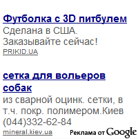
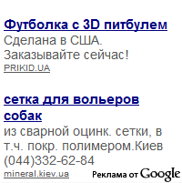

Русская тойка
Русская тойка
 Чихуахуа
Чихуахуа
 Познавательная
информация
Познавательная
информация
 Наши Контакты
Наши Контакты
Статус продажи щенков клуба в 2012 году
Горячие новости Mini-Dogs от 02 Июля 2012 года
02.07.2012
 

Самые последние новости о статусе продажи щенков русских той терьеров и чихуахуа в коллективном питомнике московских профессиональных заводчиков Mini-Dogs:
02 Июля 2012 года - зарезервирован и снят с продажи отлично сложенный коричнево-подпалый щенок той терьера Рэми, который может показать мастер-класс по борьбе даже с самим медвежонком Винни, смотрите фото щенка «Кто сильнее?». Этот смышлёный и жизнерадостный малыш не равнодушен к техническому прогрессу и уже знакомится с электронными книгами eBook просматривая специальные «Электронные инструкции для щенков» :-)
02 Июля 2012 года - зарезервирован и снят с продажи необыкновенный чёрный мальчик МИНИ чихуахуа Джо Блэк, смотрите фото супер щенка «Компьютерный Гений».
26 Июня 2012 года - зарезервирована и снята с продажи прекрасная русская мини тойка коричнево-подпалого окраса Майли Литтл Бейби, очень общительная милая девочка той терьера, смотрите фото этого щенка играющего в мяч с розовым Зайкой «Нежность». Эта маленькая малышка русского тоя также верит в чудеса и сказки, рассказанные ей Мудрым Ежом, смотрите забавную фотку Майли с Белочкой «Три Орешка для Мини Собачки» :-)
22 Июня 2012 года - продан крошечный палевый мини чихуахуа Денни поражающий не только своими миниатюрными размерами (супер мини), активностью и жизнерадостностью, но и бесстрашием, смотрите фото бесподобного щенка «Укротитель Льва». Но кроме этих особенностей у неотразимого и не по годам серьёзного малыша чихуа есть еще один маленький пунктик - он любит порядок и с очаровательной педантичностью складывает стопочками все книги, журналы и подарки с лозунгом «Беспорядку Бой!» :-)
26 Июня 2012 года - продана очаровательная рыжая девочка цвергпинчера Оливия, которая не только красавица, но и большая любительница сказок. Вот вместе лягушкой они ждут ту самую стрелу от Ивана-Царевича на фото «А где же стрела?». Она очень активна, жизнерадостна и непринужденна. Очень любит играть с новыми друзьями и радоваться жизни, смотрите фото этого обаятельного миниатюрного пинчера «Щенячья Забава» :-)
22 Июня 2012 года - продан мечтательный коричнево-подпалый щенок той терьера Манчестер, который всегда считал себя истинным горожанином и не представляет своей жизни без каменных джунглей, однако своё внутреннее «я» не обманешь и природу не обманешь, смотрите бесподобный портрет этого тойчика с красочной лейкой «Назад к Природе». Этот активный забавный малыш очень любит играть в прятки и очень часто пристаёт к своей влюбленной подружке Ежихе с возгласом: «Отгадай, кто я!» :-)
20 Июня 2012 года - продана очаровательная белая красотка чихуахуа Изабель, которая непревзойденно блистает природной красотой перед крашенной Чебурашкой от Боско на фото «Очарованная Душа». И как истинная красавица, блондинка чихуахуа Изабель тщательно следит за своей внешностью и обладает изумительным маникюром, который смело может претендовать на звание французского, поскольку он максимально естественен и натурален, вы непремнно сразу это поймете как только увидите её фото «Волшебство Маникюра» :-)
16 Июня 2012 года - продана утонченная кремовая красавица мини чихуахуа Джессика, которая с задорным и беззаботным взглядом смотрит на эту жизнь - ведь деньги для этой собачки точно не проблема, смотрите фото этой чихуашки положившей свою маленькую лапку на толстое партмоне «Сами с деньгами». :-)
06 Июня 2012 года - продан милый коричнево-подпалый длинношерстный русский той Стивен с очаровательными глазами, пронзающими своей выразительной глубиной и молчаливым пониманием, смотрите фотографию этого обаятельного щенка «Романтик с бездонными глазами». Хоть многие и считают, что русские той терьеры не относятся к сторожевым собакам, этот маленький тойчик готов с этим поспорить, смотрите еще одну забавную фотку с этой собачкой «Сторожевой той-терьер» :-)
29 мая 2012 года - продан симпатичный длинношерстный черно-подпалый щенок той терьера Себастьян, который за свою недолгую жизнь уже хорошо усвоил, что иметь безупречную внешность - это ещё не все, важно умело ею пользоваться, правильно выбирать ракурс, смотрите фотографию этого изящного и полного достоинства щенка русского тоя «В моде только чёрное». Как и многим гламурным собачкам маленькому Себастьяну очень нравится посплетничать и пообсуждать чьи-то наряды или высказывания, и он даже не пытается скрыть свои маленькие слабости, ведь щенку же не может быть запрещено мирно «Поболтать с Пчёлкой» :-)